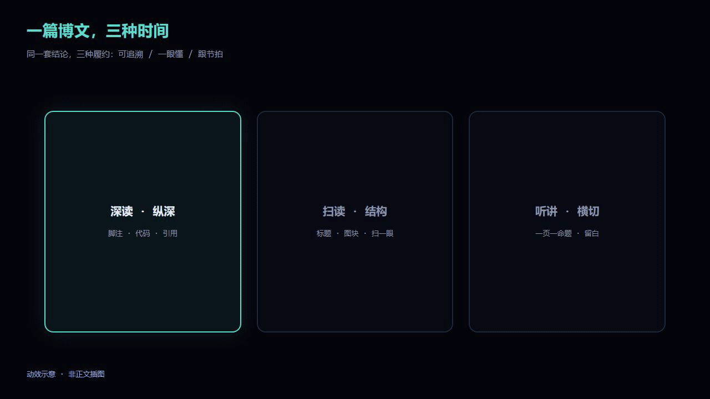
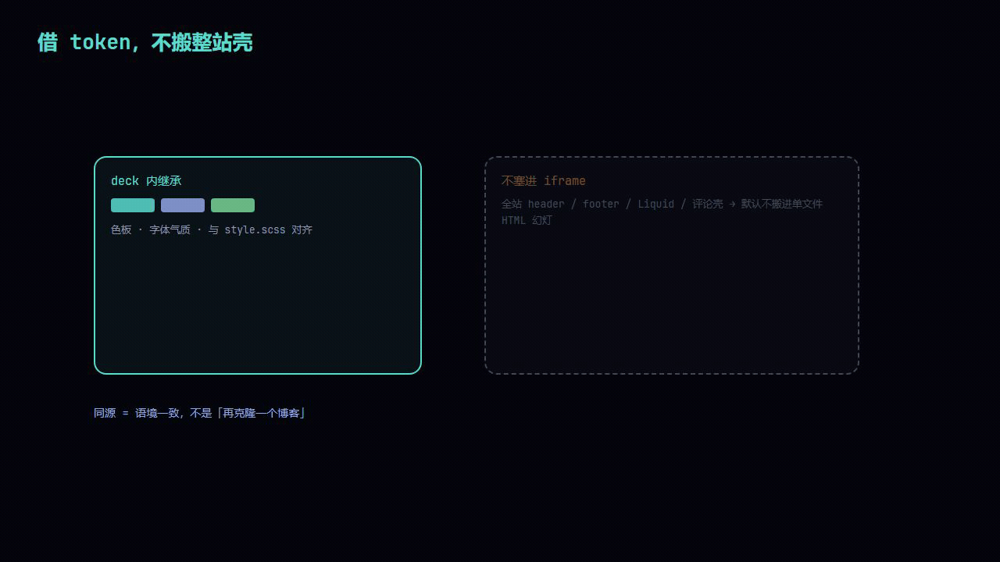
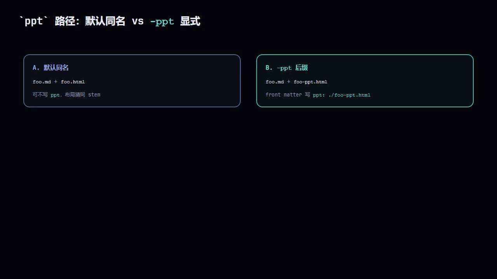
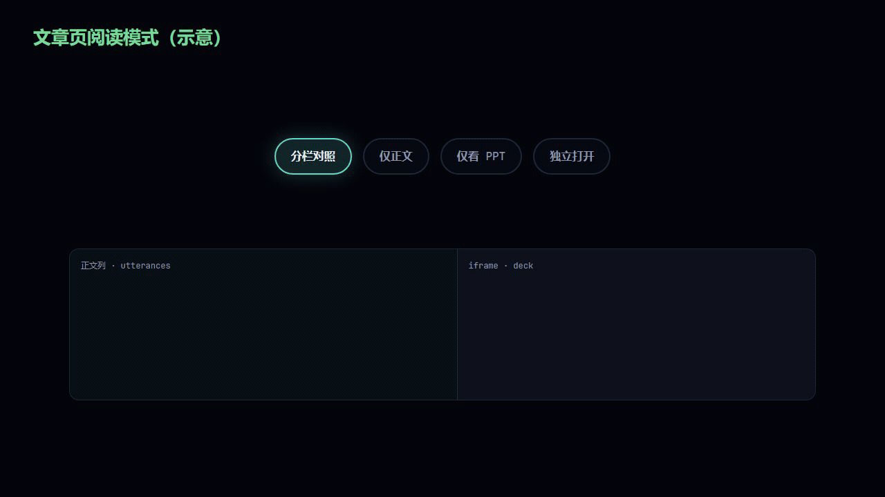
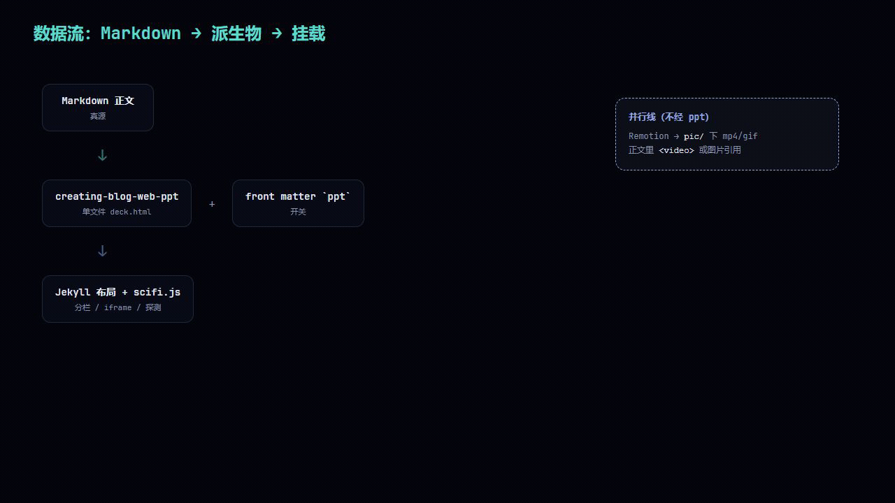
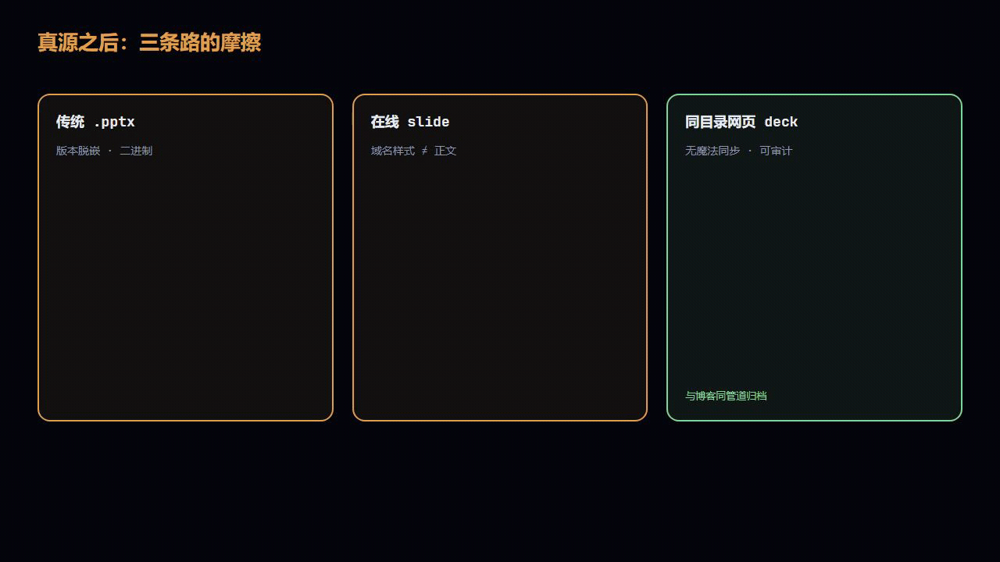

SUMSEC · 2026
一篇博文，三种时间
网页幻灯与 Remotion 动效的交付逻辑
同一套结论：深读、扫读、听讲三条时间线；Markdown 真源；网页 deck + Remotion + Jekyll 对照阅读。
问题
三种时间，三种履约
深读脚注、代码、可追溯与引用
扫读结构、标题、图块一眼懂
听讲节拍、留白、一页一命题
术语漂移、数字不一致、视觉像两个品牌 → 读者会问：我该信哪一版？
SUMSEC.ME
三条线，可独立也可接上
- 网页版 PPT —
creating-blog-web-ppt：单文件 HTML，真源仍在 Markdown。 - Remotion 示意 —
remotion-blog-motion-assets+ 子工程：pic/下动效 / 静帧。 - 站点对照阅读 —
pptfront matter：分栏、仅文、仅 PPT、独立打开。
真源之后
衍生品是带利息的负债
.pptx / 在线 slide / 泛用 HTML slides：版本脱嵌、域名与正文割裂、不像你的站。
笨路：幻灯仍是网页，借站点 token；同目录、同管道归档。代价：没有 md→slide 魔法同步，只有可审计的派生物。
深读吃字，听讲吃节拍 — 别用写论文的肌肉硬塞一页 slide。
Remotion 示意
深读 / 扫读 / 听讲

与正文插图不同类；仅概念动效。
分工
两条 Skill，两种失败模式
| 产物 | Skill | 容易栽在哪 |
|---|---|---|
| 网页幻灯 | creating-blog-web-ppt | 密度失控、画布溢出、品牌位链错 |
| 动效 / 静帧 | remotion-blog-motion-assets | 时间线乱拍、GIFW≠W、色板漂移 |
写 Remotion 时协同加载本机 remotion-best-practices。
creating-blog-web-ppt
先三句主张，再写 HTML
拆页 = 编辑权；模型擅长压缩，不替你决定「这一页只留一句」该留什么。
- 读
style.scss/default.html/ references - visual / content / interaction 三句
- 单文件、画布钉在视口内
SUMSEC→ 博文公开 URL- 浏览器级验证
Remotion 示意
借 token，不搬整站壳

remotion-blog-motion-assets
时间轴逼你承认在画什么
MP4 像素 = 上限；GIF 256 色；正文关键动效优先 <video>。
色板
#05060c #5cdbcf #94a8e8 #7dd79a #e0a050命令
子工程
子工程
README.md；GIFW = WJekyll
ppt 是开关，不是装饰链接
| 策略 | 文件 | front matter |
|---|---|---|
| A 默认同名 | foo.md + foo.html | 可不写 ppt |
B -ppt | foo-ppt.html | ppt: ./foo-ppt.html |

scifi.js
分栏 · 仅正文 · 仅 PPT · 独立打开

评论仍在正文列；utterances 不进 iframe。
端到端
Markdown → deck / ppt / Jekyll

并行：Remotion → pic/，不经 ppt。
Remotion 示意
三条常见路径

可迁移
五条硬规矩 + 边界
- 真源只认一份；幻灯 / 动效是投影，不是第二份胡写的副本。
- 视觉从站点样式继承；「可讲」用显式开关承诺。
- 别拿幻灯顶替站点 IA；deck 别进
resources/。 - Skill 管底线，不管你是否值得被听。
收束
可讲性是税，不是功德
短文可以没有第二载体。两头跑就要付维护税：工序固化、对照 UI 可选、视觉别分家。
deck 有了再在 front matter 补 ppt；动效见子工程 README。